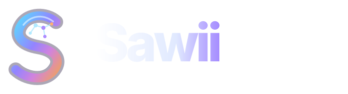
Sawii — parent brand
Neural S monogram + Sawii wordmark, separate from Companion product emblem.
sawii-wordmark.svgReviewable, scalable vector scenes for the app and website. Illustration only; not live product status. New brain-hemisphere identity. Source and adoption guidance in docs/sawii-brain-brand-marketing-2026-10-28.md.

Neural S monogram + Sawii wordmark, separate from Companion product emblem.
sawii-wordmark.svg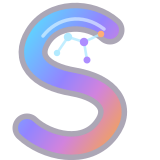
Cyan-to-violet intelligent S ribbon with neural-node detail.
sawii-symbol.svg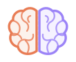
New master logo · two distinct brain hemispheres
sawii-brain-mark.svg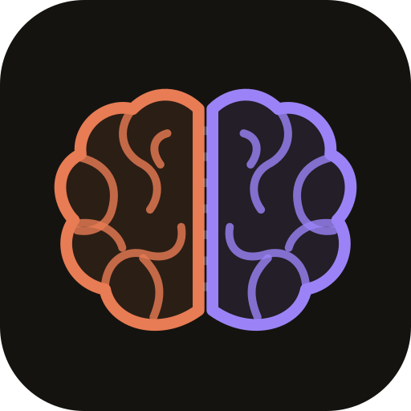
App and social avatar
sawii-brain-avatar.svg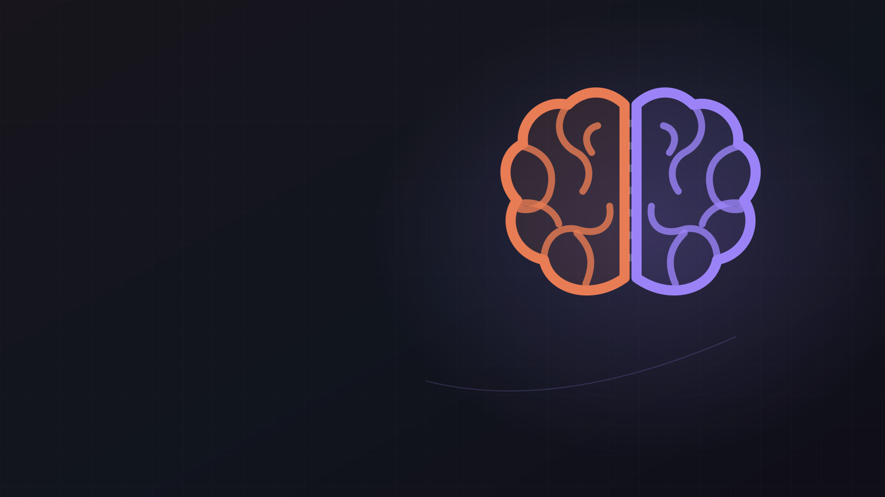
Website hero · copy-safe left side
hero-dual-minds.svg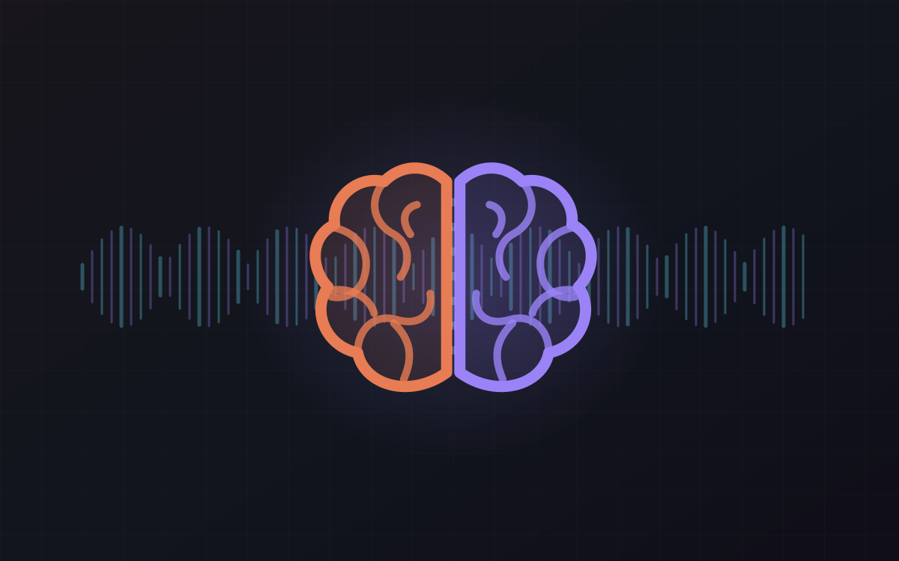
Voice introduction · illustration only
voice-always-listening.svg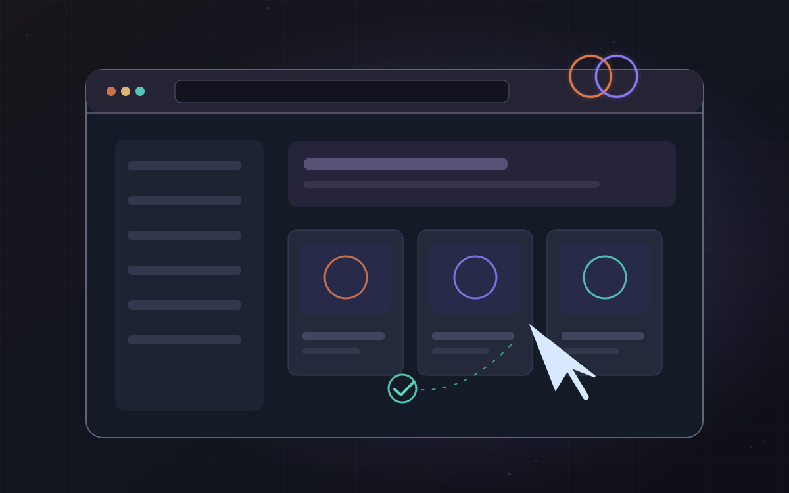
Browser and computer use · illustration only
browser-computer-hands.svg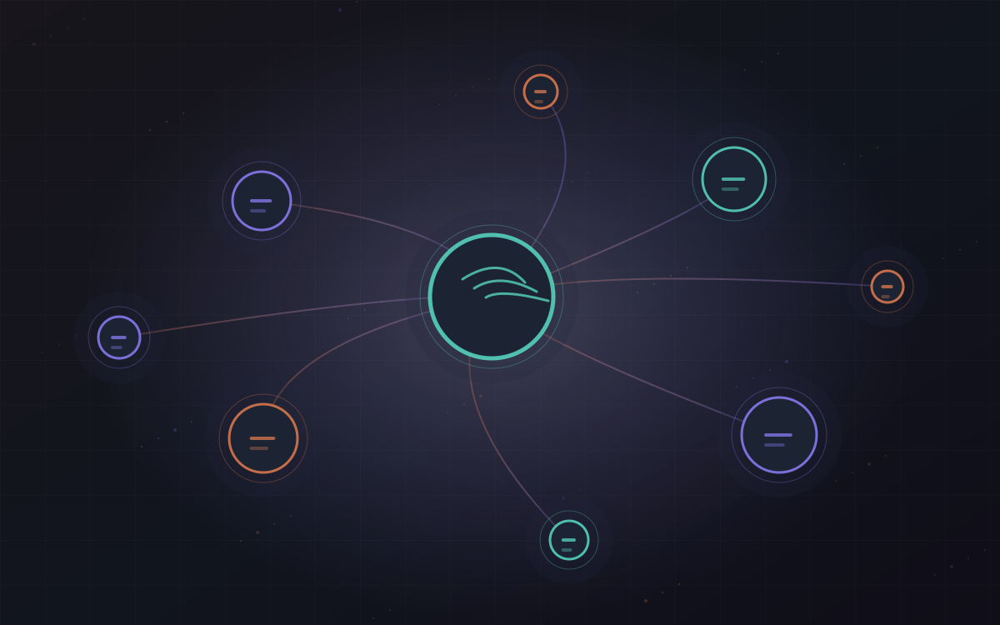
Context and long-term memory
memory-constellation.svg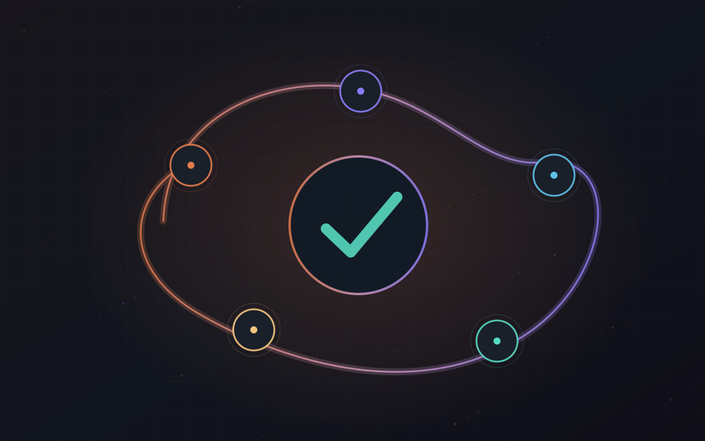
Persistent execution and work progress
persistent-task-loop.svg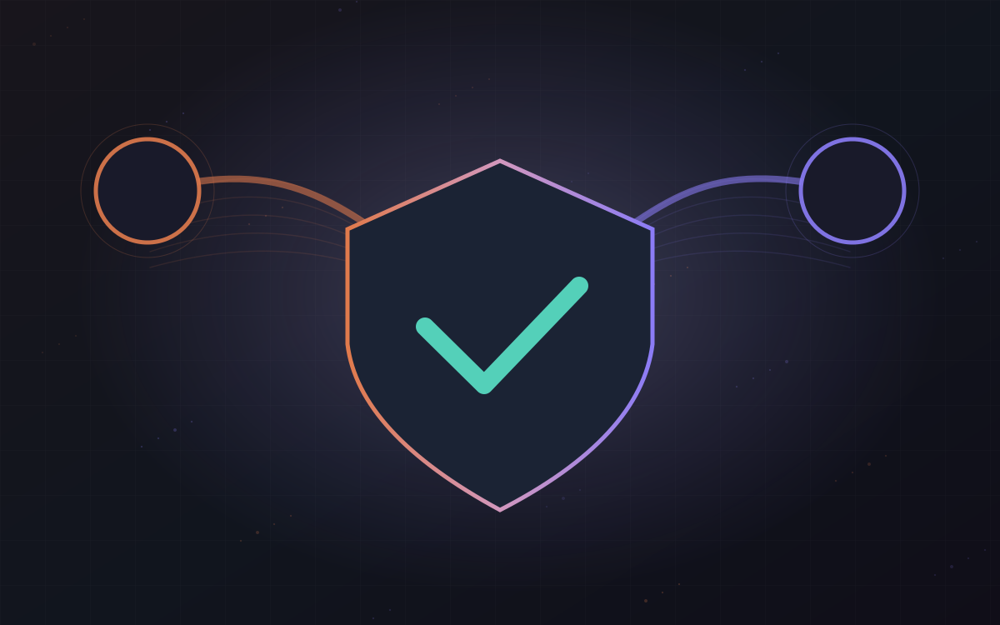
Verifier concept
independent-verification.svg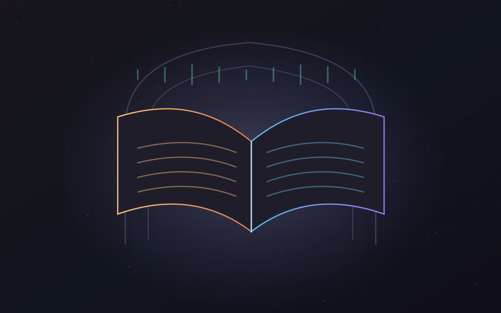
Dedicated recitation mode only
recitation-practice.svg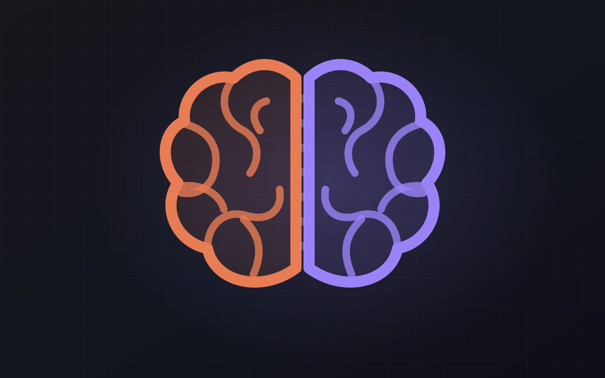
Brand signature
signature-brain.svg